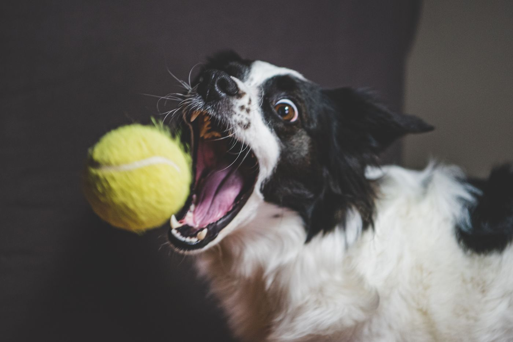
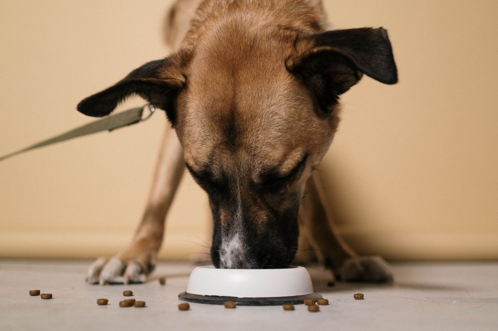

We spend a fortune trying to learn how to “be present.” Apps, retreats, courses, breathing techniques. Meanwhile there is a small furry master of the art asleep in a sunbeam on your floor, having achieved total enlightenment with zero effort and no subscription fee. Let’s talk about what your pet already knows — and, delightfully, the science that backs up nearly all of it.
The 47% Problem (Your Dog Doesn’t Have It)
Here’s a genuinely startling number. Harvard researchers used an app to ping thousands of people at random moments and ask what they were doing and how they felt. The finding: we spend a staggering nearly 47% of our waking hours thinking about something other than what we’re actually doing — and all that mental time-travel makes us less happy. Our minds wander to the past and the future almost as often as they rest in the present, and it quietly costs us.
Your dog’s mind-wandering rate is approximately zero. When they’re eating, they are eating. When they’re greeting you, they are having the single greatest moment of their life. They are never half-here. That’s the whole lesson, and everything below is just how they pull it off.
They Don’t Drag the Past Around
Dogs absolutely have memory — they know their people, their favourite routes, whether the vet’s office is a good place or a bad one. But they don’t ruminate. They don’t lie in their bed cringing over that time they barked at a perfectly innocent leaf. A scare passes through them and they shake it off — sometimes literally, with a full-body shake — and return to baseline within minutes.
It’s why they forgive so instantly, and why they greet you like a returning war hero when you’ve been gone all of ten minutes. They’re not holding a grudge about this morning, because this morning is over and this is now.
They Don’t Borrow Trouble From the Future
Your dog has never once worried about next week. They don’t dread the future or catastrophize the what-ifs, which is a significant chunk of what keeps humans up at night. They plan nothing and fear nothing that isn’t in front of them. The future, to a dog, is a rumour — and the present is the only country they’ve ever lived in.
Your dog has mastered the one thing every meditation app is trying to sell you: they are completely, gloriously, unapologetically here.

No clock, no calendar — just this moment, read entirely through the senses.
They Literally Smell Time
This is the part that should genuinely blow your mind. Dogs don’t watch clocks — but they may perceive time through smell. Cognition researcher Alexandra Horowitz has described how the scent of your home shifts and fades over the course of a day; as your morning smell slowly decays, that fading scent may be exactly how your dog “knows” when you’re due home. They’re not counting the hours. They’re reading the present moment so closely that time itself becomes a smell.
Sit with that. While we’re anxiously watching a clock tick away a future that hasn’t arrived, your dog is letting go of time entirely and simply sensing their way through the day. That’s the deepest version of “living in the now” there is.
Joy Is a Tennis Ball
Watch a dog on a walk they have done four hundred times. Same street, same trees, same fire hydrant. And yet — ecstasy. A stick is a miracle. A puddle is an event. A single good smell can make their whole day. The zoomies are what pure, uncut, present-moment joy looks like when it can no longer be contained by a body.
This isn’t because dogs are simple. It’s because they haven’t learned to discount small pleasures the way we have. We’re forever saving our joy for the big milestone; they spend it lavishly on a Tuesday. The lesson is almost embarrassingly simple: let the small things be big.
The “Sniffari” Is Their Meditation
When your dog stops to sniff — and sniff, and sniff — they’re not being annoying. They’re doing the most immersive present-moment sensory practice on earth. Letting a dog sniff freely on walks (trainers call them “decompression” or sniffari walks) measurably lowers their stress and arousal. It’s mindfulness with a nose: total attention, one scent at a time, nothing else existing.
You have a version of this too. It’s just that you usually take your walk while mentally answering emails. Try taking it like your dog does — senses open, phone away.
Calm Is Contagious
Here’s the loveliest science of all. When you and your dog simply look at each other, a landmark study found that both of you get a rise in oxytocin — the same bonding hormone that flows between a parent and baby. Stroking a calm dog can lower your cortisol and blood pressure at the same time. Their nervous system and yours quietly sync up, and their steadiness becomes yours.
So a lot of “being present” isn’t effort — it’s company. Sit with a calm animal and some of that calm transfers straight into your body. (If you want to lean into that on purpose, my nervous system reset pairs beautifully with a dog on the couch.)

Calm is contagious — sit with a steady animal and some of that steadiness becomes yours.
How to Steal Your Dog’s Superpower
You can’t become a dog (I’ve checked). But you can borrow the practice. A few gentle, genuinely doable ways:
- Take the walk like they do. Phone in your pocket. Let the walk just be the walk — the air, the light, the ground under your feet.
- Do one thing at a time. Eat the meal. Have the conversation. Your dog never scrolls while doing something else, and they seem fine.
- Take a “sniffari.” On your next walk, name three things you can smell, three you can hear, three you can see. Instant present tense.
- Greet people like your dog greets you. Fully, warmly, like their arrival is the best thing that’s happened all day. It usually makes it true.
- Let small things be big. The first sip of coffee. A patch of sun. Spend your joy freely, on ordinary Tuesdays.
- Shake it off. When something goes wrong, feel it, then physically move — a walk, a stretch, a literal shake — and come back to now. Don’t bed down in the past.
Your dog isn’t simple. Your dog is free.
They have quietly solved the problem we spend our whole lives circling: how to actually be here. No app, no mantra, no five-year plan — just a nose, a heart, and a total commitment to the only moment that has ever really existed. You don’t have to get it perfect. You just have to look down at the small teacher asleep in the sun, and let them remind you: this, right now, is the whole thing. Go take a walk. Leave the phone.